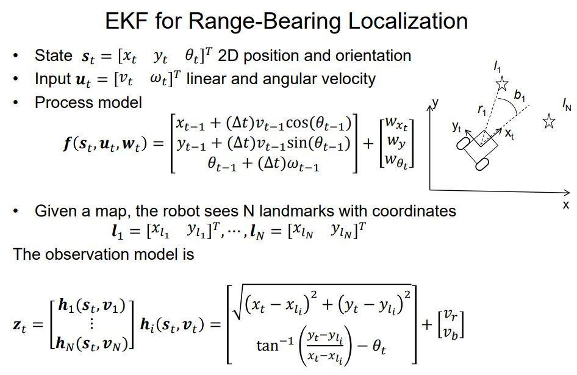

Robotic Algorithm Overview
Kalman Filter
变量$\hat{x_0}$,$\Sigma_0$分别是初始的位置与Variance.$z_t$ 是t时刻的测量值
$\hat{x'_t}$是在t时刻根据Dynamic Model而预估出来的position，是prior variables.
$\Sigma'_t$是预估的variance
Kalman Filter则是根据预估值与当前测量值之间的差，来调整Kalman系数，进而计算出posterior $\hat{x_t}$ 和 $\hat{\Sigma_t}$

H是Observability matrix，是state和measurement之间的关系
Extended Kalman Filter

大多数模型的Dynamic model都不是线性的，它们的$A$和$B$是关于state的Jacobian Matrix。其实，H（observation model）采用range, bearing model，即：计算机器人与landmarks之间的距离与夹角。 上式中，$W_{x_t}$ $W_{y_t}$ $W_{\theta_t}$是dynamic model 的noises; $v_t$和$v_b$是measurement noises EKF Slam
对于EKF SLAM，也就是每次Kalman Filter，我们都要去更新所有landmarks的位置；此时state是$${s_t} = \left[ {\matrix{ {{x_t}} & {{y_t}} & {{\theta _t}} & {l_1^T} & {...} & {l_N^T} \cr } } \right]$$